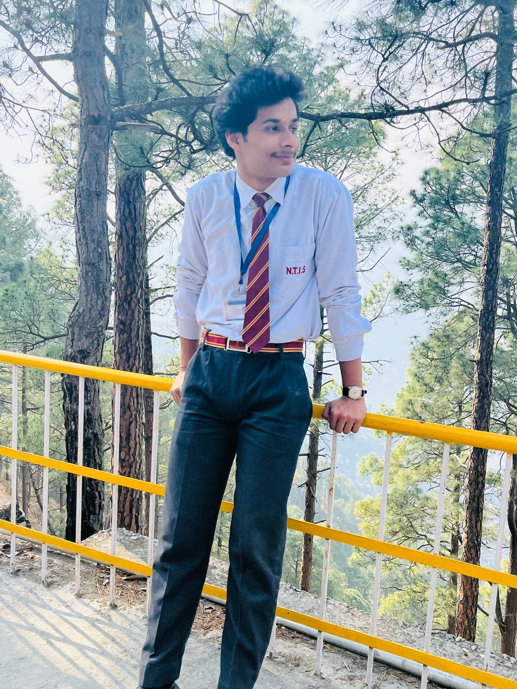

What I Value and Believe In the Most.
I'm a third-year B-Tech student majoring in IT. I'm a Java programmer with a keen knowledge of DSA and OOPS. Recently I have started to explore the AI/ML Domain & engaging myself in it. Further, I have chosen my minor specialization to be in Data science since I have an interest in this field and want to explore it more. In my 2nd year, I grabbed 2 internships one was from DRDO in my summer training period where I held the role of ai ml intern and the second is in a startup Tech-A-Intern as a Java developer. Currently, I am writing a research paper under the guidance of a renowned professor. It is related to the application of transformers in medical imaging particularly cardiology. Beyond academics, I'm actively involved in various co-curricular activities. I love to play chess and badminton, fond of reading novels in my leisure time. Additionally, I do take part in societal works too. I have organized several events and am also in the core team of 2 societies as of now. So, there I had the essence of leadership and team spirit to work in the corporate world. Further, As I look forward to beginning a career, I'm seeking a technical role that not only enhances my experience & resume but also broadens my knowledge base. I aspire to be part of a cooperative environment where I can implement new technologies, contribute to real-world projects & also can enhance my soft skills.
What I am Doing
In his will, Kafka instructed his close friend and literary executor Max Brod to destroy his unfinished works, including his novels The Trial, The Castle, and Amerika, but Brod ignored these instructions and had much of his work published. Kafka's writings became famous in German-speaking countries after World War II, influencing their literature, and its influence spread elsewhere in the world in the 1960s. It has also influenced artists, composers, and philosophers.
What Exicts Me The Most
Kafka was born near the Old Town Square in Prague, then part of the Austro-Hungarian Empire. His family were German-speaking middle-class Ashkenazi Jews. His father, Hermann Kafka (1854–1931), was the fourth child of Jakob Kafka,[8][9] a shochet or ritual slaughterer in Osek, a Czech village with a large Jewish population located near Strakonice in southern Bohemia.[10] Hermann brought the Kafka family to Prague. After working as a travelling sales representative, he eventually became a fashion retailer who employed up to 15 people and used the image of a jackdaw (kavka in Czech, pronounced and colloquially written as kafka) as his business logo.[11] Kafka's mother, Julie (1856–1934), was the daughter of Jakob Löwy, a prosperous retail merchant in Poděbrady,[12] and was better educated than her husband.
My Hobbies.
- Playing Games
- Talkling
- Gym.
My Contact Details
- Ph.No.:2347XXXXX9940
- Email:varunXXddksdj$#33@@gmail.com